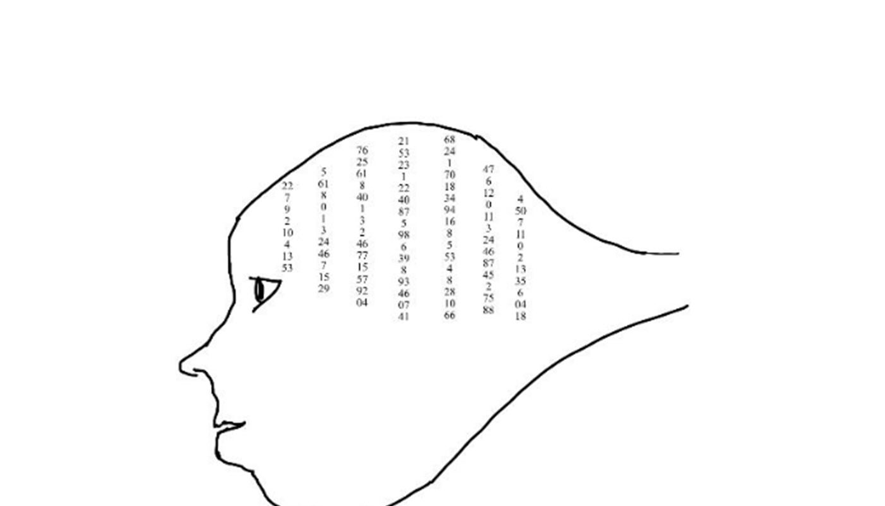

Chapitre 4 — Matrices
Définition d’une matrice
Une matrice de dimension \(n \times p\) est un tableau de nombres comportant \(n\) lignes et \(p\) colonnes. Le coefficient \(a_{ij}\) désigne le nombre situé à l’intersection de la \(i\)-ième ligne et de la \(j\)-ième colonne.
Matrice carrée
Une matrice carrée possède autant de lignes que de colonnes : \(n=p\).
Matrice colonne
Une matrice colonne ne comporte qu’une seule colonne. Elle est donc de dimension \(n \times 1\) ; on l’utilise souvent pour regrouper les inconnues ou les termes constants d’un système.
Matrice identité
La matrice identité \(I_n\) est une matrice carrée qui comporte des 1 sur sa diagonale principale et des 0 partout ailleurs. Voici l’exemple de la matrice identité d’ordre 3 :
Applications en informatique
Les matrices ont des usages concrets en informatique : elles représentent les pixels d’une image, permettent de transformer les coordonnées ou de faire pivoter un objet dans un jeu vidéo, et décrivent les connexions entre ordinateurs d’un réseau. Elles servent ainsi à organiser et traiter des données.
A. Opérations

I. Addition
Les matrices dont on effectue la somme doivent avoir le même nombre de lignes et aussi le même nombre de colonnes.
Exemple
Soient deux matrices :
Exercice 46
Soient deux matrices :
Calculer \(M+N\).
II. Multiplication par une constante
Soient une matrice \(M\) et un réel \(k\), avec \(a,b,c,d\) réels.
Exemple
Exercice 47
Soient les deux matrices \(M\) et \(N\) définies à l’exercice 46. Calculer \(2M-3N\).
III. Multiplication de matrices
Remarques importantes :
La multiplication n’est possible que si le nombre de colonnes de la première matrice est égal au nombre de lignes de la deuxième.
La matrice produit aura le même nombre de lignes que la première matrice et le même nombre de colonnes que la deuxième.
La multiplication n’est pas commutative, c’est-à-dire \(M\times N\ne N\times M\).
Calcul des coefficients du produit
Soient les matrices \(M\) et \(N\) ci-dessous. Chaque coefficient du produit est obtenu en multipliant une ligne de \(M\) par une colonne de \(N\), puis en additionnant les produits.
Le produit n’est pas commutatif
Avec \(M\) et \(N\) ci-dessous, les deux produits sont différents :
Exercice 48
1) Soient deux matrices :
Calculer \(M\times N\).
2) Soient deux matrices :
Calculer \(I\times J\).
B. Matrice inverse
I. Définition
La matrice inverse de la matrice \(M\) est notée \(M^{-1}\) et c’est la matrice qui vérifie :
\(I\) étant la matrice identité, composée de 0, sauf sa première diagonale qui comporte exclusivement des 1.
Exemple de matrice d’identité :
Remarque
Dans la section du BTS SIO, déterminer la matrice inverse par le calcul n’est pas exigé. L’étudiant devra soit prouver qu’une matrice est l’inverse d’une autre, soit la déterminer par l’utilisation de sa calculatrice.
Vérifier une matrice inverse
Soient les deux matrices ci-dessous. Démontrons que \(N\) est la matrice inverse de \(M\) en effectuant leur produit.
Le produit est la matrice identité ; \(N\) est donc bien la matrice inverse de \(M\).
Calculatrice : inverse d’une matrice
Déterminer la matrice inverse de \(B\). Dans l’éditeur de matrice de la calculatrice, saisir \(B\), puis demander \(B^{-1}\) à l’écran de calcul. On obtient :
Exercice 49
Soient les deux matrices :
Démontrer que \(A\) est la matrice inverse de \(B\).
Exercice 50
Soit la matrice :
Déterminer la matrice inverse de \(C\).
II. Applications des matrices
1) Les graphes
Les matrices font partie des outils très utilisés pour travailler sur les graphes. Cette application sera développée ultérieurement dans le chapitre 5 de cet ouvrage.
2) Résolution de systèmes
De nombreux problèmes concrets aboutissent à des systèmes de plusieurs équations avec autant d’inconnues. Les matrices se révèlent alors très utiles dans la résolution de ces systèmes.
Voici la méthode de résolution expliquée à partir d’un exemple pour un système de 4 équations à 4 inconnues réelles : \(x,y,z\) et \(t\).
Construisons la matrice \(M\), composée des coefficients de chaque inconnue, ligne par ligne ; la matrice colonne \(X\) des inconnues ; puis la matrice colonne \(K\) des membres de droite de chaque équation.
On a donc \(M\times X=K\), qui représente le système à résoudre.
Déterminer, à la calculatrice, la matrice \(M^{-1}\), la matrice inverse de \(M\) :
Multiplions les membres de l’égalité \(M\times X=K\) par cette matrice \(M^{-1}\), en gardant le même ordre de multiplication.
Soit :
Conclusion :
La solution du système est donc \(\left(-\frac{24}{5}\,;\,\frac{569}{45}\,;\,-\frac{103}{9}\,;\,-\frac{622}{45}\right)\).
Exercice 51 — Sujet SIO Nouvelle-Calédonie, novembre 2020
Une petite entreprise de la zone euro, créée le 1er janvier 2018, vend des ordinateurs destinés à des professionnels. Les ordinateurs sont de trois types K, L et M. Le tableau suivant détaille les différents coûts, en euro, relatifs aux ordinateurs de chaque type, durant l’année 2018.
| Type d’ordinateur | Type K | Type L | Type M |
|---|---|---|---|
| Coût des éléments matériels | 100 | 150 | 250 |
| Coût de la main d’œuvre | 100 | 150 | 200 |
| Coût de la livraison | 50 | 50 | 50 |
\(X\) est la matrice colonne correspondant à \(x\) ordinateurs de type K, \(y\) ordinateurs de type L et \(z\) ordinateurs de type M vendus durant un mois de l’année 2018. \(Y\) est la matrice colonne des coûts totaux respectifs, en euro, des éléments matériels, de la main d’œuvre et de la livraison de ces ordinateurs durant ce même mois.
1) a) Écrire une égalité matricielle reliant les matrices \(A\), \(X\) et \(Y\).
b) Durant le mois de janvier 2018, l’entreprise a vendu 25 ordinateurs de type K, 40 ordinateurs de type L et 15 ordinateurs de type M. À l’aide du calcul matriciel, calculer le coût total des éléments matériels, celui de la main d’œuvre et celui de la livraison durant ce mois.
2) On considère la matrice :
a) Calculer le produit matriciel \(B\times A\).
b) Démontrer que, si \(A\times X=Y\), alors \(X=B\times Y\).
c) Durant le mois de février 2016, le coût total relatif à tous les ordinateurs vendus s’est élevé à 13 500 € pour les éléments matériels, 12 350 € pour la main d’œuvre et 4 150 € pour la livraison. Déterminer le nombre d’ordinateurs de chaque type qui ont été vendus durant ce mois.